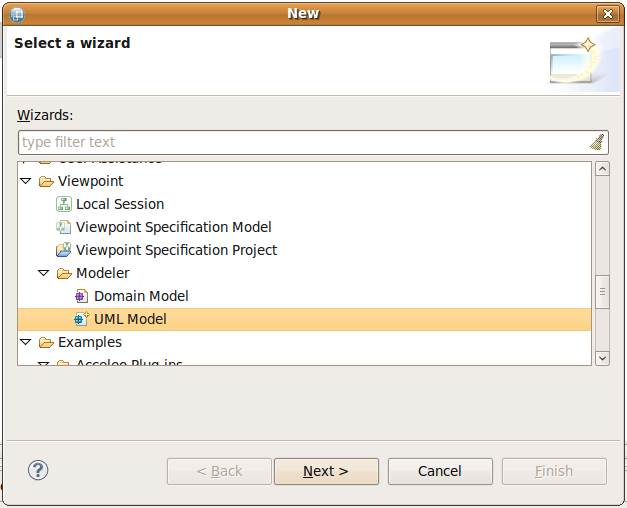
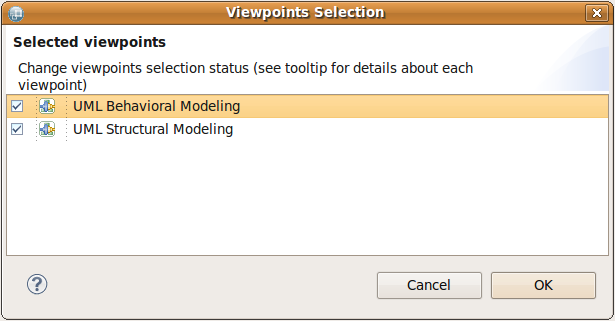

© Obeo 2011 - All rights reserved. This program and the accompanying materials are made available under the terms of the Eclipse Public License v1.0
Authors Gonzague ReydetContact gonzague.reydet@obeo.fr
This section describes how to start using the UML designer either from existing UML models or by creating a new one.
Import the TravelAgency project using the menu File/New/Example....
Pick the Travel Agency UML wizard and click on Next and then Finish.

Click Finish on the wizard and a TravelAgency project appears in your workspace.

Double-click on the agency.aird file (or right click and Open Session), you will be greeted with the main package hierarchy diagram.

From here you can navigate to existing diagrams by right clicking on the Model.
To create a new UML model and an associated designer session, open the wizard through the menu File > New > Other... and select the UML Model item through the category Viewpoint > Modeler.

You can choose specific name and location for the UML & designer session files on the next wizard pages. When you press the Finish button, the viewpoint selection dialog shows up.
Once the UML Structural viewpoint is selected, a new editor opens on the root package hierarchy diagram showing only the root package.
Now you can right click on the displayed package to create all the available diagrams or use the palette to create the package structure that fits to your needs.
To create a new UML design on existing UML models, simply drag & drop the root UML model to handle into the Model Content view.
Then a wizard will show up asking you to create a new session. Follow the step upon the viewpoint selection dialog.
Once the UML Structural viewpoint is selected, a new editor opens on the root package hierarchy diagram showing the existing package structure of your model.
Two viewpoints are specified on the UML designer each bringing the following views:

You can select either viewpoints or both depending on your use case. Note that the Package hierarchy diagram is the entry point to create new diagrams such as Activity or Sequence diagrams. So it is advised to select at least the UML Structural modeling viewpoint.